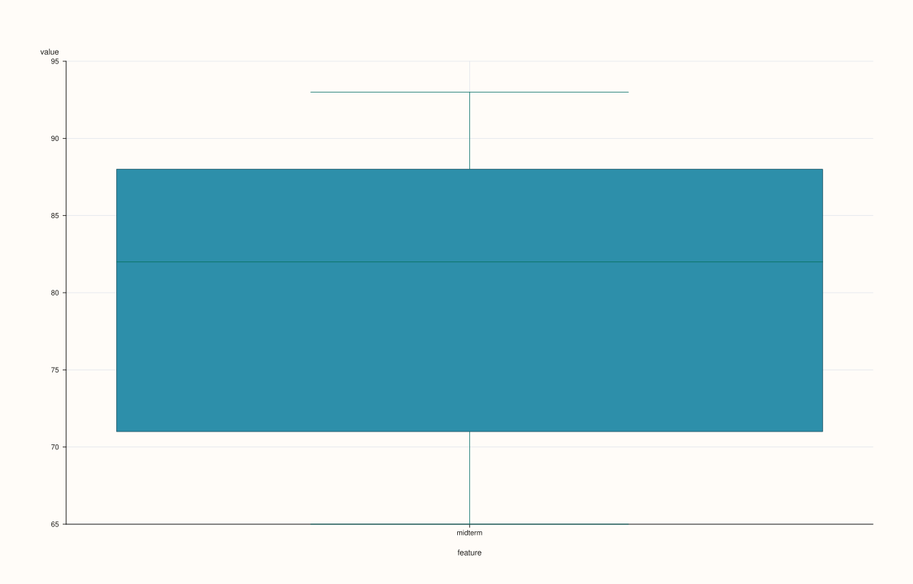

ThreadPlotAccessor::box¶
Back to ThreadPlotAccessor API Reference
Signature¶
ThreadPlotAccessor::box(const BoxPlotOptions& options = {}) const -> pluss::pl::Studio
What It Does¶
Draws a single box-and-whisker distribution summary for the bound thread’s values — the
single-series specialization of
DataFramePlotAccessor::box. Unlike the 2D accessor’s
box(), which can summarize several features side by side in one pane, this overload
always draws exactly one box, since a Thread is always exactly one series; there is no
features parameter and no “infer every numeric feature” rule to speak of here.
Parameters¶
options (BoxPlotOptions)
The identical struct documented on
DataFramePlotAccessor::box (alpha,
line_width).
Returns¶
pluss::pl::Studio
A figure with one pane containing a single box, x-axis tick labeled with the bound
thread’s name() (or the fallback "value").
Examples¶
Example 1. Default options.
using namespace pluss::table;
auto midterm = Thread(pluss::make_series({71.0, 82.0, 93.0, 65.0, 88.0}));
midterm = midterm.name("midterm");
auto chart = midterm.plot().box();
chart.show();

Example 2. An explicit BoxPlotOptions.
BoxPlotOptions options;
options.alpha = 0.8;
options.line_width = 1.6;
auto chart = midterm.plot().box(options);
chart.show();
Notes¶
Always draws exactly one box — there is no multi-feature form the way the 2D accessor’s
box()has.Non-finite values are dropped before the box statistics are computed, same as
DataFramePlotAccessor::box.Returns a
pluss::pl::Studio— seeline()for how to view or save the result.
See Also¶
DataFramePlotAccessor::box: the multi-feature method this delegates to (with a single feature bound in).ThreadPlotAccessor::violin: full distribution shape instead of just quartiles and whiskers, including a value-vs-group overload this method doesn’t have.